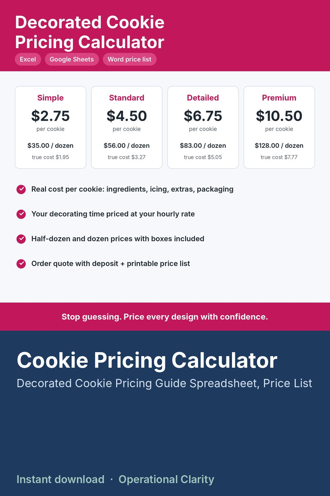

Cookie Pricing Calculator

COOKIE PRICING CALCULATOR | Decorated Cookie Pricing Guide Spreadsheet + Editable Price List & Order Form | Excel & Google Sheets | Instant Download
How much should you charge for a decorated cookie? This calculator works it out from YOUR numbers: what you pay for ingredients, how much icing each design uses, packaging, and how long each cookie takes you to decorate. No more guessing or copying someone else's price list.
WHAT IT DOES
• Ingredients: enter the price and package size once, cost per gram / ml / each calculates for you
• Recipes: build your sugar cookie dough and royal icing batches, get the cost per cookie
• 4 design tiers (Simple, Standard, Detailed, Premium): minutes per cookie, extra icing used and extras like sprinkles or edible ink
• Packaging: bags, labels, half-dozen and dozen boxes, ribbon
• Price calculator: true cost per cookie including your time and overhead, suggested price per cookie, half dozen and dozen, and your profit on each
• "Am I charging enough?" check: enter your current prices and see your profit per cookie and what you really earn per hour. Red means that design is losing money.
• Order quote: pick tiers and quantities, add stencil, rush and delivery fees, and get the total, deposit and balance due
• Printable price list tab that updates with your prices
• BONUS: editable Word price list and custom cookie order form for your customers
WHAT YOU GET
• Decorated Cookie Pricing Calculator (.xlsx) for Excel or Google Sheets
• Cookie Price List & Order Form (Word + PDF)
• Start Here guide
Example numbers are included so you can see how it works. Replace them with your own.
GOOD TO KNOW
• Digital download. No physical item will be shipped.
• For use in your own business. No reselling or sharing of the files.